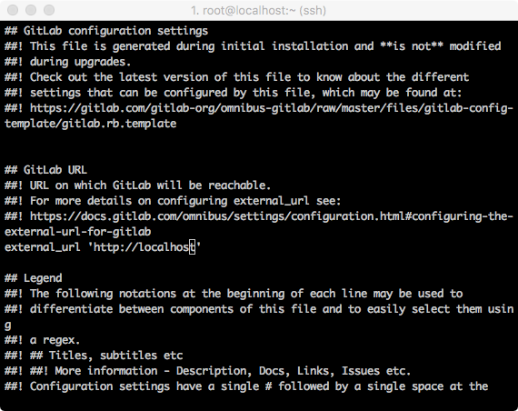
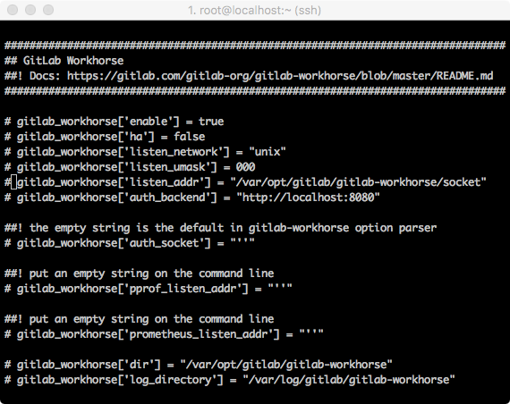
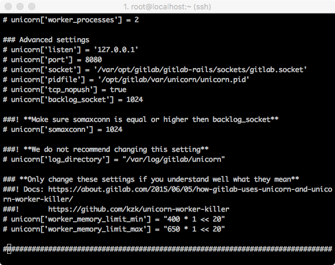
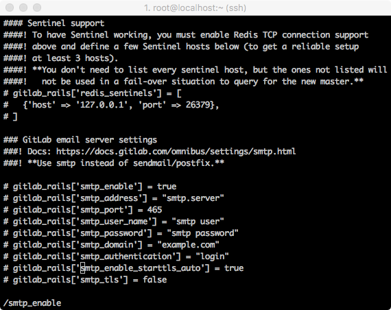
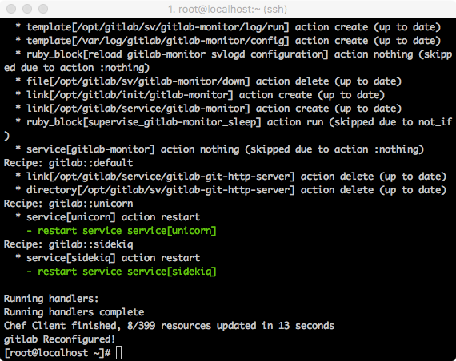
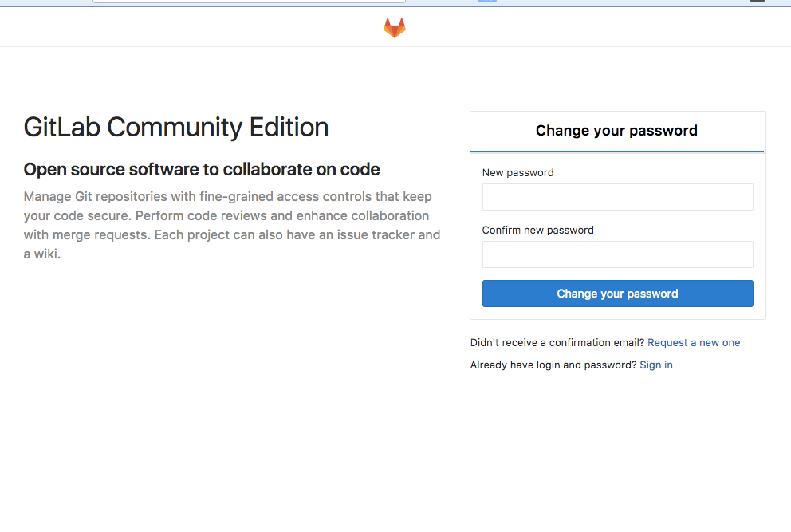
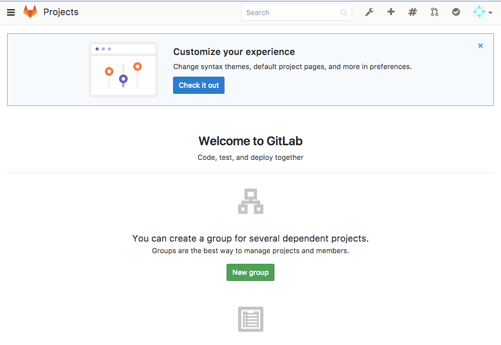
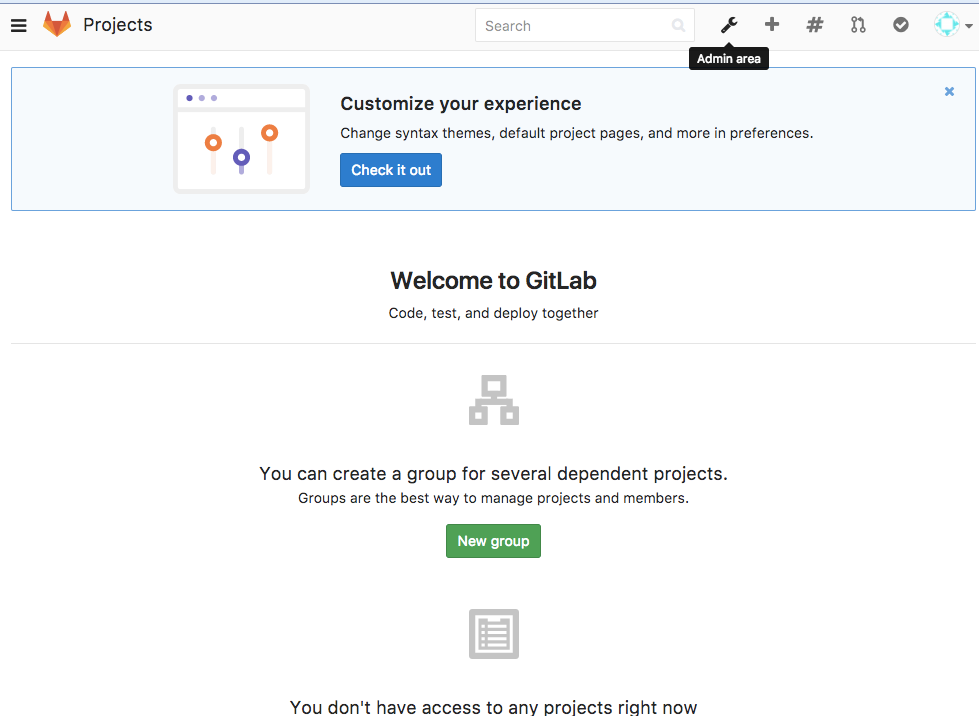

<!DOCTYPE html>
<html>
<head><meta name="generator" content="Hexo 3.8.0">
    <meta charset="utf-8">
    
    <title>Gitlab Install | J Dev</title>
    <meta name="viewport" content="width=device-width, initial-scale=1, maximum-scale=1">
    
        <meta name="keywords" content="gitlab">
    
    <meta name="description" content="Gitlab 설치 (CentOS 7)Gitlab은 Git의 원격 저장소 기능과 이슈 트래커 기능등을 제공하는 소프트웨어 입니다. 설치형 Github라는 컨셉으로 시작된 프로젝트이기 때문에 Github와 비슷한 면이 많이 있습니다. 서비스 형 원격저장소를 운영하는 것에 대한 비용이 부담되거나, 소스코드의 보안이 중요한 프로젝트에게 적당 합니다.  패키지 종류">
<meta name="keywords" content="gitlab">
<meta property="og:type" content="article">
<meta property="og:title" content="Gitlab Install">
<meta property="og:url" content="http://woonyzzang.github.com/2019/08/12/gitlab-install/index.html">
<meta property="og:site_name" content="J Dev">
<meta property="og:description" content="Gitlab 설치 (CentOS 7)Gitlab은 Git의 원격 저장소 기능과 이슈 트래커 기능등을 제공하는 소프트웨어 입니다. 설치형 Github라는 컨셉으로 시작된 프로젝트이기 때문에 Github와 비슷한 면이 많이 있습니다. 서비스 형 원격저장소를 운영하는 것에 대한 비용이 부담되거나, 소스코드의 보안이 중요한 프로젝트에게 적당 합니다.  패키지 종류">
<meta property="og:locale" content="en">
<meta property="og:image" content="http://woonyzzang.github.com/2019/08/12/gitlab-install/gitlab-install_1.png">
<meta property="og:updated_time" content="2019-08-12T13:58:51.609Z">
<meta name="twitter:card" content="summary">
<meta name="twitter:title" content="Gitlab Install">
<meta name="twitter:description" content="Gitlab 설치 (CentOS 7)Gitlab은 Git의 원격 저장소 기능과 이슈 트래커 기능등을 제공하는 소프트웨어 입니다. 설치형 Github라는 컨셉으로 시작된 프로젝트이기 때문에 Github와 비슷한 면이 많이 있습니다. 서비스 형 원격저장소를 운영하는 것에 대한 비용이 부담되거나, 소스코드의 보안이 중요한 프로젝트에게 적당 합니다.  패키지 종류">
<meta name="twitter:image" content="http://woonyzzang.github.com/2019/08/12/gitlab-install/gitlab-install_1.png">
    
    <link rel="canonical" href="http://woonyzzang.github.com/2019/08/12/gitlab-install/">

    

    
        <link rel="icon" href="/images/favicon.png">
    

    <link rel="stylesheet" href="/libs/font-awesome/css/font-awesome.min.css">
    <link rel="stylesheet" href="/libs/titillium-web/styles.css">
    <link rel="stylesheet" href="/libs/source-code-pro/styles.css">

    <link rel="stylesheet" href="/css/style.css">

    <script src="/libs/jquery/2.0.3/jquery.min.js"></script>
    
    
        <link rel="stylesheet" href="/libs/lightgallery/css/lightgallery.min.css">
    
    
    

</head>
</html>
<body>
    <div id="wrap">
        <header id="header">
    <div id="header-outer" class="outer">
        <div class="container">
            <div class="container-inner">
                <div id="header-title">
                    <h1 class="logo-wrap">
                        <a href="/" class="logo"></a>
                    </h1>
                    
                        <h2 class="subtitle-wrap">
                            <p class="subtitle">Web Development Story Blog</p>
                        </h2>
                    
                </div>
                <div id="header-inner" class="nav-container">
                    <a id="main-nav-toggle" class="nav-icon fa fa-bars"></a>
                    <div class="nav-container-inner">
                        <ul id="main-nav">
                            
                                <li class="main-nav-list-item">
                                    <a class="main-nav-list-link" href="/">Home</a>
                                </li>
                            
                                        <ul class="main-nav-list"><li class="main-nav-list-item"><a class="main-nav-list-link" href="/categories/App/">App</a><ul class="main-nav-list-child"><li class="main-nav-list-item"><a class="main-nav-list-link" href="/categories/App/Ionic/">Ionic</a></li></ul></li><li class="main-nav-list-item"><a class="main-nav-list-link" href="/categories/Editor/">Editor</a><ul class="main-nav-list-child"><li class="main-nav-list-item"><a class="main-nav-list-link" href="/categories/Editor/SublimeText/">SublimeText</a></li><li class="main-nav-list-item"><a class="main-nav-list-link" href="/categories/Editor/Visualstudio/">Visualstudio</a></li><li class="main-nav-list-item"><a class="main-nav-list-link" href="/categories/Editor/Webstorm/">Webstorm</a></li></ul></li><li class="main-nav-list-item"><a class="main-nav-list-link" href="/categories/Etc/">Etc</a><ul class="main-nav-list-child"><li class="main-nav-list-item"><a class="main-nav-list-link" href="/categories/Etc/Log/">Log</a></li></ul></li><li class="main-nav-list-item"><a class="main-nav-list-link" href="/categories/FrontEnd/">FrontEnd</a><ul class="main-nav-list-child"><li class="main-nav-list-item"><a class="main-nav-list-link" href="/categories/FrontEnd/Angular-js/">Angular.js</a></li><li class="main-nav-list-item"><a class="main-nav-list-link" href="/categories/FrontEnd/Backbone-js/">Backbone.js</a></li><li class="main-nav-list-item"><a class="main-nav-list-link" href="/categories/FrontEnd/D3-js/">D3.js</a></li><li class="main-nav-list-item"><a class="main-nav-list-link" href="/categories/FrontEnd/Javascript-js/">Javascript.js</a></li><li class="main-nav-list-item"><a class="main-nav-list-link" href="/categories/FrontEnd/Node-js/">Node.js</a></li><li class="main-nav-list-item"><a class="main-nav-list-link" href="/categories/FrontEnd/React-js/">React.js</a></li><li class="main-nav-list-item"><a class="main-nav-list-link" href="/categories/FrontEnd/Require-js/">Require.js</a></li><li class="main-nav-list-item"><a class="main-nav-list-link" href="/categories/FrontEnd/Webpack/">Webpack</a></li><li class="main-nav-list-item"><a class="main-nav-list-link" href="/categories/FrontEnd/jQuery/">jQuery</a></li></ul></li><li class="main-nav-list-item"><a class="main-nav-list-link" href="/categories/OS/">OS</a><ul class="main-nav-list-child"><li class="main-nav-list-item"><a class="main-nav-list-link" href="/categories/OS/CentOS/">CentOS</a></li><li class="main-nav-list-item"><a class="main-nav-list-link" href="/categories/OS/Mac/">Mac</a></li><li class="main-nav-list-item"><a class="main-nav-list-link" href="/categories/OS/Ubuntu/">Ubuntu</a></li><li class="main-nav-list-item"><a class="main-nav-list-link" href="/categories/OS/Windows/">Windows</a></li></ul></li><li class="main-nav-list-item"><a class="main-nav-list-link" href="/categories/Server/">Server</a><ul class="main-nav-list-child"><li class="main-nav-list-item"><a class="main-nav-list-link" href="/categories/Server/ASP/">ASP</a></li><li class="main-nav-list-item"><a class="main-nav-list-link" href="/categories/Server/AWS/">AWS</a></li><li class="main-nav-list-item"><a class="main-nav-list-link" href="/categories/Server/Docker/">Docker</a></li><li class="main-nav-list-item"><a class="main-nav-list-link" href="/categories/Server/Gitlab/">Gitlab</a></li><li class="main-nav-list-item"><a class="main-nav-list-link" href="/categories/Server/PHP/">PHP</a></li></ul></li><li class="main-nav-list-item"><a class="main-nav-list-link" href="/categories/Tools/">Tools</a><ul class="main-nav-list-child"><li class="main-nav-list-item"><a class="main-nav-list-link" href="/categories/Tools/APMSETUP/">APMSETUP</a></li><li class="main-nav-list-item"><a class="main-nav-list-link" href="/categories/Tools/Fiddler/">Fiddler</a></li><li class="main-nav-list-item"><a class="main-nav-list-link" href="/categories/Tools/OpenSSl/">OpenSSl</a></li><li class="main-nav-list-item"><a class="main-nav-list-link" href="/categories/Tools/VMware/">VMware</a></li></ul></li><li class="main-nav-list-item"><a class="main-nav-list-link" href="/categories/Web/">Web</a><ul class="main-nav-list-child"><li class="main-nav-list-item"><a class="main-nav-list-link" href="/categories/Web/CSS/">CSS</a></li><li class="main-nav-list-item"><a class="main-nav-list-link" href="/categories/Web/Descktop/">Descktop</a></li><li class="main-nav-list-item"><a class="main-nav-list-link" href="/categories/Web/HTML/">HTML</a></li><li class="main-nav-list-item"><a class="main-nav-list-link" href="/categories/Web/Mobile/">Mobile</a></li><li class="main-nav-list-item"><a class="main-nav-list-link" href="/categories/Web/Others/">Others</a></li></ul></li></ul>
                                    
                        </ul>
                        <nav id="sub-nav">
                            <div id="search-form-wrap">

    <form class="search-form">
        <input type="text" class="ins-search-input search-form-input" placeholder="Search">
        <button type="submit" class="search-form-submit"></button>
    </form>
    <div class="ins-search">
    <div class="ins-search-mask"></div>
    <div class="ins-search-container">
        <div class="ins-input-wrapper">
            <input type="text" class="ins-search-input" placeholder="Type something...">
            <span class="ins-close ins-selectable"><i class="fa fa-times-circle"></i></span>
        </div>
        <div class="ins-section-wrapper">
            <div class="ins-section-container"></div>
        </div>
    </div>
</div>
<script>
(function (window) {
    var INSIGHT_CONFIG = {
        TRANSLATION: {
            POSTS: 'Posts',
            PAGES: 'Pages',
            CATEGORIES: 'Categories',
            TAGS: 'Tags',
            UNTITLED: '(Untitled)',
        },
        ROOT_URL: '/',
        CONTENT_URL: '/content.json',
    };
    window.INSIGHT_CONFIG = INSIGHT_CONFIG;
})(window);
</script>
<script src="/js/insight.js"></script>

</div>
                        </nav>
                    </div>
                </div>
            </div>
        </div>
    </div>
</header>
        <div class="container">
            <div class="main-body container-inner">
                <div class="main-body-inner">
                    <section id="main">
                        <div class="main-body-header">
    <h1 class="header">
    
    <a class="page-title-link" href="/categories/Server/">Server</a><i class="icon fa fa-angle-right"></i><a class="page-title-link" href="/categories/Server/Gitlab/">Gitlab</a>
    </h1>
</div>
                        <div class="main-body-content">
                            <article id="post-gitlab-install" class="article article-single article-type-post" itemscope="" itemprop="blogPost">
    <div class="article-inner">
        
            <header class="article-header">
                
    
        <h1 class="article-title" itemprop="name">
        Gitlab Install
        </h1>
    

            </header>
        
        
            <div class="article-subtitle">
                <a href="/2019/08/12/gitlab-install/" class="article-date">
    <time datetime="2019-08-12T13:56:30.000Z" itemprop="datePublished">2019-08-12</time>
</a>
                
    <ul class="article-tag-list"><li class="article-tag-list-item"><a class="article-tag-list-link" href="/tags/gitlab/">gitlab</a></li></ul>

            </div>
        
        
        <div class="article-entry" itemprop="articleBody">
            <h3 id="Gitlab-설치-CentOS-7"><a href="#Gitlab-설치-CentOS-7" class="headerlink" title="Gitlab 설치 (CentOS 7)"></a>Gitlab 설치 (CentOS 7)</h3><p>Gitlab은 Git의 원격 저장소 기능과 이슈 트래커 기능등을 제공하는 소프트웨어 입니다. 설치형 Github라는 컨셉으로 시작된 프로젝트이기 때문에 Github와 비슷한 면이 많이 있습니다. 서비스 형 원격저장소를 운영하는 것에 대한 비용이 부담되거나, 소스코드의 보안이 중요한 프로젝트에게 적당 합니다. </p>
<p><strong>패키지 종류</strong><br>GitLab 패키지는 3가지로 구분 됩니다.</p>
<ul>
<li>GitLab CE : Community Edition으로 설치형이고 아무런 제한 없이 무료</li>
<li>GitLab EE : Enterprise Edition으로 설치형이고 매월 유저당 과금. 자세한 내용은 <a href="https://about.gitlab.com/pricing/" target="_blank" rel="noopener">https://about.gitlab.com/pricing/</a> 참고</li>
<li>GitLab.com : 클라우드형이고 개인이 가입해서 사용하면 무료 (10명 이하의 프로젝트는 무료로 사용할 수 있습니다.)</li>
</ul>
<p>CE와 EE 버전 기능 비교는 <a href="https://about.gitlab.com/features/#compare" target="_blank" rel="noopener">https://about.gitlab.com/features/#compare</a> 참고.</p>
<p><strong>Gitlab의 특징</strong></p>
<ul>
<li>Git 저장소 및 관리<ul>
<li>프로젝트 생성하면 자동으로 git 저장소가 생성됨</li>
</ul>
</li>
<li>그룹 및 팀원<ul>
<li>그룹을 만들고 팀원을 지정해서 그룹 단위로 접근 권한을 관리할 수 있음</li>
</ul>
</li>
<li>업무 관리<ul>
<li>마일스톤을 설정하고 이슈를 등록해서 담당자를 지정해서 업무를 관리할 수 있음</li>
<li>코드 커밋 로그에 이슈번호 넣으면 자동으로 이슈와 연결</li>
<li>라벨을 사용해서 이슈를 구분해서 관리할 수 있음</li>
</ul>
</li>
<li>코드 리뷰<ul>
<li>Merge request를 통해 코드 리뷰를 할 수 있는 프로세스를 만들 수 있음</li>
<li>해당 request에 댓글로 커뮤니케이션 할 수 있고 소스코드에도 댓글 달 수 있음</li>
</ul>
</li>
<li>위키<ul>
<li>markdown 형식 지원</li>
<li>wiki 별도 git 저장소가 생성되어 로컬에서 작업해서 push 해도 됨</li>
</ul>
</li>
<li>이력 및 통계 조회<ul>
<li>Activity 이력 조회</li>
<li>Files 브라우징</li>
<li>Commit 브라우징(커밋 이력, 브랜치로 비쥬얼하게 이력 조회, 그래프로 통계 제공)</li>
</ul>
</li>
<li>검색<ul>
<li>전체 검색: 프로젝트, 이슈, Merge request 검색 가능</li>
<li>그룹 내 검색: 프로젝트, 이슈, Merge request 검색 가능</li>
<li>프로젝트 내 검색: 코드, 이슈, Merge request, 코멘트, Wiki 검색 가능</li>
</ul>
</li>
<li>Snippets<ul>
<li>재사용 가능한 소스 코드나 텍스트를 저장해서 사용하는 기능</li>
<li>공통 유틸성 코드나 팁에 대해서 공개해서 사용하면 좋을 것 같다.</li>
</ul>
</li>
<li>관리자<ul>
<li>그룹 및 사용자 관리</li>
<li>관리자 페이지에서 사용자 추가해도 되고 회원가입 형태도 되고 LDAP 연동도 가능함</li>
</ul>
</li>
<li>어플리케이션 지원<ul>
<li>iOS, Android, Chrome App 등의 Native App 지원</li>
<li>자세한 사항은 <a href="https://about.gitlab.com/applications" target="_blank" rel="noopener">https://about.gitlab.com/applications</a> 참고</li>
</ul>
</li>
<li>CI<ul>
<li>패키지에 GitLab CI가 내장되어 있음</li>
<li>GitLab과 연동해서 활용하는 방법이 쉽지 않음</li>
</ul>
</li>
</ul>
<h3 id="1-git-설치"><a href="#1-git-설치" class="headerlink" title="1. git 설치"></a>1. git 설치</h3><p>일단 설치가 되어 있는지 확인해보겠습니다.</p>
<figure class="highlight bash"><table><tr><td class="gutter"><pre><span class="line">1</span><br></pre></td><td class="code"><pre><span class="line">$ git --version</span><br></pre></td></tr></table></figure>
<p><strong>git 최신버전 설치</strong><br>기존 git 이 설치 되어 있다면 최신 버전을 사용하기 위하여 아래 명령어로 제거합니다.</p>
<figure class="highlight bash"><table><tr><td class="gutter"><pre><span class="line">1</span><br></pre></td><td class="code"><pre><span class="line">$ yum remove git</span><br></pre></td></tr></table></figure>
<p>최신 버전을 사용하기 위해서 소스코드를 컴파일 해서 설치를 할 수도 있으나 업그레이드나 여러가지 불편함이 있기에 Wandisco 사에서 운영하는 repository를 사용하겠습니다. 해당 repository를 사용하기 위하여 아래의 링크를 install 합니다.</p>
<figure class="highlight bash"><table><tr><td class="gutter"><pre><span class="line">1</span><br></pre></td><td class="code"><pre><span class="line">$ yum install http://opensource.wandisco.com/centos/7/git/x86_64/wandisco-git-release-7-1.noarch.rpm</span><br></pre></td></tr></table></figure>
<p>다시 git을 install해줍니다.</p>
<figure class="highlight bash"><table><tr><td class="gutter"><pre><span class="line">1</span><br></pre></td><td class="code"><pre><span class="line">$ yum install git</span><br></pre></td></tr></table></figure>
<h3 id="2-Gitlab-설치"><a href="#2-Gitlab-설치" class="headerlink" title="2. Gitlab 설치"></a>2. Gitlab 설치</h3><ul>
<li>공식 홈페이지의 내용을 따라하면 손쉽게 설치가 됩니다. 살짝 설정을 바꿔줄 부분은 있습니다.</li>
<li><a href="https://about.gitlab.com/install/#centos-7" target="_blank" rel="noopener">https://about.gitlab.com/install/#centos-7</a></li>
<li>공식 홈페이지는 아래가 처음 설치 할 것으로 소개하고 있는데요, 아마 기본적으로 CentOS를 설치할 때 이미 설치되어 있는 것들이 있을 것입니다.</li>
</ul>
<figure class="highlight bash"><table><tr><td class="gutter"><pre><span class="line">1</span><br><span class="line">2</span><br><span class="line">3</span><br><span class="line">4</span><br><span class="line">5</span><br><span class="line">6</span><br><span class="line">7</span><br><span class="line">8</span><br></pre></td><td class="code"><pre><span class="line">$ sudo yum install curl policycoreutils openssh-server openssh-clients </span><br><span class="line">$ sudo systemctl <span class="built_in">enable</span> sshd </span><br><span class="line">$ sudo systemctl start sshd </span><br><span class="line">$ sudo yum install postfix </span><br><span class="line">$ sudo systemctl <span class="built_in">enable</span> postfix </span><br><span class="line">$ sudo systemctl start postfix </span><br><span class="line">$ sudo firewall-cmd --permanent --add-service=http </span><br><span class="line">$ sudo systemctl reload firewalld</span><br></pre></td></tr></table></figure>
<p>설치된 패키지 확인은 아래의 명령어로 확인 하시면 됩니다.</p>
<figure class="highlight bash"><table><tr><td class="gutter"><pre><span class="line">1</span><br></pre></td><td class="code"><pre><span class="line">$ yum list installed | grep 패키지명</span><br></pre></td></tr></table></figure>
<p>GitLab Package repository를 추가합니다.</p>
<figure class="highlight bash"><table><tr><td class="gutter"><pre><span class="line">1</span><br></pre></td><td class="code"><pre><span class="line">$ curl <span class="_">-s</span>S https://packages.gitlab.com/install/repositories/gitlab/gitlab-ce/script.rpm.sh | sudo bash</span><br></pre></td></tr></table></figure>
<p>gitlab설치 파일을 다운로드 받고 gitlab설치를 합니다. 다음 명령어를 이용해 설치합니다.<br>참고로 설치할때 <code>EXTERNAL_URL</code> 은 옵션값으로 브라우저로 접속할 정보를 입력하는데 여기에 포트도 추가하여 입력해도 됩니다.<br>대신 포트를 추가하는 경우 firewalld 나 iptables를 사용할 경우 에서 추가 설정을 해주어야 합니다.</p>
<figure class="highlight bash"><table><tr><td class="gutter"><pre><span class="line">1</span><br></pre></td><td class="code"><pre><span class="line">$ sudo yum install gitlab-ce</span><br></pre></td></tr></table></figure>
<p>or </p>
<figure class="highlight bash"><table><tr><td class="gutter"><pre><span class="line">1</span><br><span class="line">2</span><br><span class="line">3</span><br><span class="line">4</span><br><span class="line">5</span><br></pre></td><td class="code"><pre><span class="line">$ sudo EXTERNAL_URL=<span class="string">"http://[server id]:[port]"</span> yum install -y gitlab-ce</span><br><span class="line"></span><br><span class="line"><span class="comment"># 만약 포트번호 추가했을 경우 firewalld 사용시 아래와 같은 방법으로 해제</span></span><br><span class="line">$ sudo firewall-cmd --permanent --zone=public --add-port=[포트번호]/tcp</span><br><span class="line">$ sudo systemctl reload firewalld</span><br></pre></td></tr></table></figure>
<p>설치가 완료되면 다음과 같이 로그가 찍힙니다.</p>
<figure class="highlight bash"><table><tr><td class="gutter"><pre><span class="line">1</span><br><span class="line">2</span><br><span class="line">3</span><br><span class="line">4</span><br><span class="line">5</span><br><span class="line">6</span><br><span class="line">7</span><br><span class="line">8</span><br><span class="line">9</span><br><span class="line">10</span><br><span class="line">11</span><br><span class="line">12</span><br><span class="line">13</span><br><span class="line">14</span><br><span class="line">15</span><br><span class="line">16</span><br><span class="line">17</span><br><span class="line">18</span><br><span class="line">19</span><br><span class="line">20</span><br><span class="line">21</span><br><span class="line">22</span><br><span class="line">23</span><br><span class="line">24</span><br><span class="line">25</span><br><span class="line">26</span><br><span class="line">27</span><br><span class="line">28</span><br><span class="line">29</span><br><span class="line">30</span><br><span class="line">31</span><br><span class="line">32</span><br><span class="line">33</span><br><span class="line">34</span><br><span class="line">35</span><br><span class="line">36</span><br><span class="line">37</span><br><span class="line">38</span><br><span class="line">39</span><br></pre></td><td class="code"><pre><span class="line">Running handlers:</span><br><span class="line">Running handlers complete</span><br><span class="line">Chef Client finished, 199/619 resources updated <span class="keyword">in</span> 03 minutes 36 seconds</span><br><span class="line">gitlab Reconfigured!</span><br><span class="line"> </span><br><span class="line">       *.                  *.</span><br><span class="line">      ***                 ***</span><br><span class="line">     *****               *****</span><br><span class="line">    .******             *******</span><br><span class="line">    ********            ********</span><br><span class="line">   ,,,,,,,,,***********,,,,,,,,,</span><br><span class="line">  ,,,,,,,,,,,*********,,,,,,,,,,,</span><br><span class="line">  .,,,,,,,,,,,*******,,,,,,,,,,,,</span><br><span class="line">      ,,,,,,,,,*****,,,,,,,,,.</span><br><span class="line">         ,,,,,,,****,,,,,,</span><br><span class="line">            .,,,***,,,,</span><br><span class="line">                ,*,.</span><br><span class="line">  </span><br><span class="line"> </span><br><span class="line"> </span><br><span class="line">     _______ __  __          __</span><br><span class="line">    / ____(_) /_/ /   ____ _/ /_</span><br><span class="line">   / / __/ / __/ /   / __ `/ __ \</span><br><span class="line">  / /_/ / / /_/ /___/ /_/ / /_/ /</span><br><span class="line">  \____/_/\__/_____/\__,_/_.___/</span><br><span class="line">  </span><br><span class="line"> </span><br><span class="line">Thank you <span class="keyword">for</span> installing GitLab!</span><br><span class="line">GitLab should be available at http://[server id]:[port]</span><br><span class="line"> </span><br><span class="line">For a comprehensive list of configuration options please see the Omnibus GitLab readme</span><br><span class="line">https://gitlab.com/gitlab-org/omnibus-gitlab/blob/master/README.md</span><br><span class="line"> </span><br><span class="line">  Verifying  : gitlab-ee-11.3.4-ee.0.el7.x86_64</span><br><span class="line"> </span><br><span class="line">Installed:</span><br><span class="line">  gitlab-ee.x86_64 0:11.3.4-ee.0.el7                                                                    </span><br><span class="line"> </span><br><span class="line">Complete!</span><br></pre></td></tr></table></figure>
<ul>
<li>설정을 바꿔줄 부분이 있습니다. 설정을 바꿔줄 부분은 3가지 입니다.</li>
<li>gitlab페이지가 기본적으로 80포트를 사용하고 인증 관련된 unicorn 부분은 8080포트를 사용합니다. 만약 해당 포트가 Apache와 Tomcat에서 사용하는 포트와 동일하면 충돌이 합니다. 그리고 이메일을 사용하기 위해 smtp를 설정할 수 있습니다.</li>
<li>gitlab설정파일은 아래에 있습니다. 아래의 경로의 파일을 vi에디터로 오픈합니다.</li>
</ul>
<figure class="highlight bash"><table><tr><td class="gutter"><pre><span class="line">1</span><br></pre></td><td class="code"><pre><span class="line">$ vi /etc/gitlab/gitlab.rb</span><br></pre></td></tr></table></figure>
<p></p>
<ul>
<li>오픈 하자마자 보시면 external_url 항목이 보이게 됩니다.</li>
<li>gitlab페이지가 보여지는 웹사이트 포트번호 입니다.</li>
<li>원하시는 포트번호를 입력합니다. 나중에 방화벽에서도 오픈시킬 번호 입니다.</li>
</ul>
<figure class="highlight bash"><table><tr><td class="gutter"><pre><span class="line">1</span><br></pre></td><td class="code"><pre><span class="line">external_url <span class="string">'http://localhost:포트번호'</span></span><br></pre></td></tr></table></figure>
<ul>
<li>인증 및 unicorn 과 관련된 부분이 두군데가 있습니다. 에디터 화면에서 / 입력한후 8080으로 입력하시면 쉽게 찾으실수 있습니다.</li>
<li>8080으로 되어 있는 줄에서 반드시 ‘#’으로된 주석을 제거 하시고 8080 번호를 다른 포트로 변경합니다.</li>
<li>변경하실때 위에서 변경한 포트와 다른 포트로 변경합니다.</li>
<li>내부적으로 인증과 관련한 포트 번호 입니다. 이 포트는 방화벽을 해제할 필요는 없습니다.</li>
</ul>
<p><br></p>
<ul>
<li>이제 smtp설정입니다. 이는 gitlab에서 유저 인증이나 각종 알림의 용도로 사용됩니다.</li>
<li>에디터 화면에서 <code>smtp_enable</code> 라는 글자로 검색을 해봅니다. 검색은 / 명령어 입니다.</li>
</ul>
<p></p>
<ul>
<li>위 설정을 google smtp정보를 입력할 것입니다. 그리고 입력하시고 주석을 제거합니다.</li>
<li>위 설정은 필수는 아닙니다.</li>
<li>설정을 하지 않으면 유저 생성할때 패스워드 생성할때 유저에게 이메일 보내어 인증이 된 사용자에게 패스워드를 설정하게 되는데, 이는 사용자를 생성하고 다시 관리자가 다시 사용자 정보에 재진입하여 패스워드를 설정해주면 됩니다.</li>
<li>구글 smtp설정은 아래 링크를 참조하세요.</li>
</ul>
<p><a href="https://support.google.com/a/answer/176600?hl=ko" target="_blank" rel="noopener">https://support.google.com/a/answer/176600?hl=ko</a></p>
<ul>
<li>기타 메일 설정은 아래 링크에 더 있습니다.</li>
</ul>
<p><a href="https://docs.gitlab.com/omnibus/settings/smtp.html" target="_blank" rel="noopener">https://docs.gitlab.com/omnibus/settings/smtp.html</a></p>
<figure class="highlight bash"><table><tr><td class="gutter"><pre><span class="line">1</span><br><span class="line">2</span><br><span class="line">3</span><br><span class="line">4</span><br><span class="line">5</span><br><span class="line">6</span><br><span class="line">7</span><br><span class="line">8</span><br><span class="line">9</span><br><span class="line">10</span><br></pre></td><td class="code"><pre><span class="line">gitlab_rails[<span class="string">'smtp_enable'</span>] = <span class="literal">true</span> </span><br><span class="line">gitlab_rails[<span class="string">'smtp_address'</span>] = <span class="string">"smtp.gmail.com"</span> </span><br><span class="line">gitlab_rails[<span class="string">'smtp_port'</span>] = 587 </span><br><span class="line">gitlab_rails[<span class="string">'smtp_user_name'</span>] = <span class="string">"my.email@gmail.com"</span> </span><br><span class="line">gitlab_rails[<span class="string">'smtp_password'</span>] = <span class="string">"my-gmail-password"</span> </span><br><span class="line">gitlab_rails[<span class="string">'smtp_domain'</span>] = <span class="string">"smtp.gmail.com"</span> </span><br><span class="line">gitlab_rails[<span class="string">'smtp_authentication'</span>] = <span class="string">"login"</span> </span><br><span class="line">gitlab_rails[<span class="string">'smtp_enable_starttls_auto'</span>] = <span class="literal">true</span> </span><br><span class="line">gitlab_rails[<span class="string">'smtp_tls'</span>] = <span class="literal">false</span> </span><br><span class="line">gitlab_rails[<span class="string">'smtp_openssl_verify_mode'</span>] = <span class="string">'peer'</span></span><br></pre></td></tr></table></figure>
<ul>
<li>변경이 완료되었으면 저장하고 빠져 나옵니다.</li>
<li>이제 방화벽 설정을 합니다. 첫번째로 변경한 gitlab페이지가 보여지는 웹사이트 포트번호만 오픈 하시면됩니다.</li>
</ul>
<figure class="highlight bash"><table><tr><td class="gutter"><pre><span class="line">1</span><br><span class="line">2</span><br></pre></td><td class="code"><pre><span class="line">$ firewall-cmd --permanent --add-port=변경한포트/tcp </span><br><span class="line">$ firewall-cmd --reload</span><br></pre></td></tr></table></figure>
<p>그리고 다음 명령어를 실행하여 적용 합니다.</p>
<figure class="highlight bash"><table><tr><td class="gutter"><pre><span class="line">1</span><br></pre></td><td class="code"><pre><span class="line">$ sudo gitlab-ctl reconfigure</span><br></pre></td></tr></table></figure>
<p></p>
<p>이제 설치가 완료되었습니다. 이제부터 EXTERNAL_URL에 입력한 URL 을 브라우저로 접근이 가능합니다.<br>웹브라우저에서 설정변경한 포트로 진입해봅니다.</p>
<figure class="highlight bash"><table><tr><td class="gutter"><pre><span class="line">1</span><br></pre></td><td class="code"><pre><span class="line">http://서버아이피:변경한포트번호</span><br></pre></td></tr></table></figure>
<ul>
<li>입력하고 들어가시면 아래의 화면이 처음 나타납니다.</li>
<li>root 계정의 패스워드 설정화면입니다. 원하시는 암호로 설정하고 root 아이디로 로그인합니다.</li>
</ul>
<p></p>
<ul>
<li>root로 로그인하면 나오는 화면입니다.</li>
</ul>
<p></p>
<ul>
<li>위쪽에 스패너 아이콘이 관리자용 설정 메뉴입니다. 이곳에서 유저 생성이 가능합니다.</li>
</ul>
<p></p>
<p><strong>접속 URL 변경 및 수정</strong></p>
<figure class="highlight bash"><table><tr><td class="gutter"><pre><span class="line">1</span><br><span class="line">2</span><br><span class="line">3</span><br><span class="line">4</span><br><span class="line">5</span><br><span class="line">6</span><br><span class="line">7</span><br><span class="line">8</span><br><span class="line">9</span><br><span class="line">10</span><br><span class="line">11</span><br><span class="line">12</span><br><span class="line">13</span><br><span class="line">14</span><br></pre></td><td class="code"><pre><span class="line"><span class="comment"># gitlab.rb 파일안에 URL을 수정합니다.</span></span><br><span class="line">$ vi /etc/gitlab/gitlab.rb</span><br><span class="line"> </span><br><span class="line"><span class="comment">### 아래의 내용을 찾아 수정합니다.</span></span><br><span class="line">external_url <span class="string">'http://[변경할 server id]:[변경할 port]'</span></span><br><span class="line"> </span><br><span class="line"><span class="comment"># Gitlab 레파지토리 적용</span></span><br><span class="line">$ sudo gitlab-ctl reconfigure </span><br><span class="line"> </span><br><span class="line"><span class="comment"># Gitlab 재시작</span></span><br><span class="line">$ sudo gitlab-ctl restart</span><br><span class="line"></span><br><span class="line"><span class="comment"># 포트 활성화</span></span><br><span class="line">$ firewall-cmd --permanent --add-port=변경한포트/tcp</span><br></pre></td></tr></table></figure>
<p><strong>GitLab 서버의 시작/종료</strong></p>
<figure class="highlight bash"><table><tr><td class="gutter"><pre><span class="line">1</span><br><span class="line">2</span><br><span class="line">3</span><br><span class="line">4</span><br><span class="line">5</span><br></pre></td><td class="code"><pre><span class="line"><span class="comment"># Gitlab 서버 시작</span></span><br><span class="line">$ sudo gitlab-ctl start</span><br><span class="line"></span><br><span class="line"><span class="comment"># Gitlab 서버 종료</span></span><br><span class="line">$ sudo gitlab-ctl stop</span><br></pre></td></tr></table></figure>
<p><strong>메일 테스트</strong></p>
<figure class="highlight bash"><table><tr><td class="gutter"><pre><span class="line">1</span><br><span class="line">2</span><br><span class="line">3</span><br><span class="line">4</span><br><span class="line">5</span><br><span class="line">6</span><br><span class="line">7</span><br><span class="line">8</span><br><span class="line">9</span><br><span class="line">10</span><br></pre></td><td class="code"><pre><span class="line">$ sudo gitlab-rails console</span><br><span class="line"></span><br><span class="line"><span class="comment"># 테스트 메일 보내기</span></span><br><span class="line">irb(main):001:0&gt; Notify.test_email(<span class="string">'xxx@gmail.com'</span>, <span class="string">'Message Subject'</span>, <span class="string">'Message Body'</span>).deliver_now</span><br><span class="line"></span><br><span class="line"><span class="comment"># 콘솔 나오기</span></span><br><span class="line">irb(main):002:0&gt; <span class="built_in">exit</span></span><br><span class="line"></span><br><span class="line"><span class="comment"># sudo vi /etc/gitlab/gitlab.rb 의 smtp 관련 옵션 수정시 Gitlab 재시작</span></span><br><span class="line">$ sudo gitlab-ctl restart</span><br></pre></td></tr></table></figure>
<p>구글 보안 수준이 낮은 앱의 액세스가 허용되어야 한다.</p>
<ul>
<li><a href="https://www.google.com/settings/security/lesssecureapps" target="_blank" rel="noopener">https://www.google.com/settings/security/lesssecureapps</a></li>
</ul>
<p></p>
<h3 id="gitlab-제거"><a href="#gitlab-제거" class="headerlink" title="gitlab 제거"></a>gitlab 제거</h3><p>설치되어 있는 gitlab을 제거하기 위해서는 다음과 같은 순서로 실행한다.</p>
<figure class="highlight bash"><table><tr><td class="gutter"><pre><span class="line">1</span><br><span class="line">2</span><br><span class="line">3</span><br></pre></td><td class="code"><pre><span class="line">$ gitlab-ctl cleanse</span><br><span class="line">$ gitlab-ctl uninstall</span><br><span class="line">$ yum remove gitlab-ce</span><br></pre></td></tr></table></figure>
<h3 id="참조"><a href="#참조" class="headerlink" title="참조"></a>참조</h3><ul>
<li><a href="https://about.gitlab.com/" target="_blank" rel="noopener">https://about.gitlab.com/</a></li>
<li><a href="https://wikidocs.net/16279" target="_blank" rel="noopener">https://wikidocs.net/16279</a></li>
<li><a href="https://lunightstory.tistory.com/20" target="_blank" rel="noopener">https://lunightstory.tistory.com/20</a></li>
</ul>

        </div>
        <footer class="article-footer">
            


    <a data-url="http://woonyzzang.github.com/2019/08/12/gitlab-install/" data-id="ck2knr1po004dtv9kriguqoit" class="article-share-link"><i class="fa fa-share"></i>Share</a>
<script>
    (function ($) {
        $('body').on('click', function() {
            $('.article-share-box.on').removeClass('on');
        }).on('click', '.article-share-link', function(e) {
            e.stopPropagation();

            var $this = $(this),
                url = $this.attr('data-url'),
                encodedUrl = encodeURIComponent(url),
                id = 'article-share-box-' + $this.attr('data-id'),
                offset = $this.offset(),
                box;

            if ($('#' + id).length) {
                box = $('#' + id);

                if (box.hasClass('on')){
                    box.removeClass('on');
                    return;
                }
            } else {
                var html = [
                    '<div id="' + id + '" class="article-share-box">',
                        '<input class="article-share-input" value="' + url + '">',
                        '<div class="article-share-links">',
                            '<a href="https://twitter.com/intent/tweet?url=' + encodedUrl + '" class="article-share-twitter" target="_blank" title="Twitter"></a>',
                            '<a href="https://www.facebook.com/sharer.php?u=' + encodedUrl + '" class="article-share-facebook" target="_blank" title="Facebook"></a>',
                            '<a href="http://pinterest.com/pin/create/button/?url=' + encodedUrl + '" class="article-share-pinterest" target="_blank" title="Pinterest"></a>',
                            '<a href="https://plus.google.com/share?url=' + encodedUrl + '" class="article-share-google" target="_blank" title="Google+"></a>',
                        '</div>',
                    '</div>'
                ].join('');

              box = $(html);

              $('body').append(box);
            }

            $('.article-share-box.on').hide();

            box.css({
                top: offset.top + 25,
                left: offset.left
            }).addClass('on');

        }).on('click', '.article-share-box', function (e) {
            e.stopPropagation();
        }).on('click', '.article-share-box-input', function () {
            $(this).select();
        }).on('click', '.article-share-box-link', function (e) {
            e.preventDefault();
            e.stopPropagation();

            window.open(this.href, 'article-share-box-window-' + Date.now(), 'width=500,height=450');
        });
    })(jQuery);
</script>

        </footer>
    </div>
</article>

    <section id="comments">
    
        
    <div id="disqus_thread">
        <noscript>Please enable JavaScript to view the <a href="//disqus.com/?ref_noscript">comments powered by Disqus.</a></noscript>
    </div>

    
    </section>


                        </div>
                    </section>
                    <aside id="sidebar">
    <a class="sidebar-toggle" title="Expand Sidebar"><i class="toggle icon"></i></a>
    <div class="sidebar-top">
        <p>follow:</p>
        <ul class="social-links">
            
                
                <li>
                    <a class="social-tooltip" title="github" href="https://github.com/woonyzzang/" target="_blank">
                        <i class="icon fa fa-github"></i>
                    </a>
                </li>
                
            
                
                <li>
                    <a class="social-tooltip" title="cloud" href="http://j-portfolio.herokuapp.com/" target="_blank">
                        <i class="icon fa fa-cloud"></i>
                    </a>
                </li>
                
            
                
                <li>
                    <a class="social-tooltip" title="jsfiddle" href="https://jsfiddle.net/user/woonyzzang/fiddles/" target="_blank">
                        <i class="icon fa fa-jsfiddle"></i>
                    </a>
                </li>
                
            
        </ul>
    </div>
    <!-- github card -->
    
    <div class="github-card" data-github="woonyzzang" data-width="100%" data-height="150" data-theme="default"></div>
    
    <script src="/libs/github-cards/widget.min.js"></script>
    <!-- //github card -->
    
        
<nav id="article-nav">
    
        <a href="/2019/08/15/cent-os7-ifconfig/" id="article-nav-newer" class="article-nav-link-wrap">
        <strong class="article-nav-caption">newer</strong>
        <p class="article-nav-title">
        
            Cent OS 7 ifconfig 사용
        
        </p>
        <i class="icon fa fa-chevron-right" id="icon-chevron-right"></i>
    </a>
    
    
        <a href="/2019/08/12/cent-os7-install/" id="article-nav-older" class="article-nav-link-wrap">
        <strong class="article-nav-caption">older</strong>
        <p class="article-nav-title">Cent OS 7 Install</p>
        <i class="icon fa fa-chevron-left" id="icon-chevron-left"></i>
        </a>
    
</nav>

    
    <div class="widgets-container">
        
            
                
    <div class="widget-wrap widget-list">
        <h3 class="widget-title">categories</h3>
        <div class="widget">
            <ul class="category-list"><li class="category-list-item"><a class="category-list-link" href="/categories/App/">App</a><span class="category-list-count">6</span><ul class="category-list-child"><li class="category-list-item"><a class="category-list-link" href="/categories/App/Ionic/">Ionic</a><span class="category-list-count">6</span></li></ul></li><li class="category-list-item"><a class="category-list-link" href="/categories/Editor/">Editor</a><span class="category-list-count">10</span><ul class="category-list-child"><li class="category-list-item"><a class="category-list-link" href="/categories/Editor/SublimeText/">SublimeText</a><span class="category-list-count">3</span></li><li class="category-list-item"><a class="category-list-link" href="/categories/Editor/Visualstudio/">Visualstudio</a><span class="category-list-count">1</span></li><li class="category-list-item"><a class="category-list-link" href="/categories/Editor/Webstorm/">Webstorm</a><span class="category-list-count">6</span></li></ul></li><li class="category-list-item"><a class="category-list-link" href="/categories/Etc/">Etc</a><span class="category-list-count">2</span><ul class="category-list-child"><li class="category-list-item"><a class="category-list-link" href="/categories/Etc/Log/">Log</a><span class="category-list-count">2</span></li></ul></li><li class="category-list-item"><a class="category-list-link" href="/categories/FrontEnd/">FrontEnd</a><span class="category-list-count">58</span><ul class="category-list-child"><li class="category-list-item"><a class="category-list-link" href="/categories/FrontEnd/Angular-js/">Angular.js</a><span class="category-list-count">2</span></li><li class="category-list-item"><a class="category-list-link" href="/categories/FrontEnd/Backbone-js/">Backbone.js</a><span class="category-list-count">6</span></li><li class="category-list-item"><a class="category-list-link" href="/categories/FrontEnd/D3-js/">D3.js</a><span class="category-list-count">9</span></li><li class="category-list-item"><a class="category-list-link" href="/categories/FrontEnd/Javascript-js/">Javascript.js</a><span class="category-list-count">21</span></li><li class="category-list-item"><a class="category-list-link" href="/categories/FrontEnd/Node-js/">Node.js</a><span class="category-list-count">1</span></li><li class="category-list-item"><a class="category-list-link" href="/categories/FrontEnd/React-js/">React.js</a><span class="category-list-count">12</span></li><li class="category-list-item"><a class="category-list-link" href="/categories/FrontEnd/Require-js/">Require.js</a><span class="category-list-count">2</span></li><li class="category-list-item"><a class="category-list-link" href="/categories/FrontEnd/Webpack/">Webpack</a><span class="category-list-count">3</span></li><li class="category-list-item"><a class="category-list-link" href="/categories/FrontEnd/jQuery/">jQuery</a><span class="category-list-count">2</span></li></ul></li><li class="category-list-item"><a class="category-list-link" href="/categories/OS/">OS</a><span class="category-list-count">27</span><ul class="category-list-child"><li class="category-list-item"><a class="category-list-link" href="/categories/OS/CentOS/">CentOS</a><span class="category-list-count">8</span></li><li class="category-list-item"><a class="category-list-link" href="/categories/OS/Mac/">Mac</a><span class="category-list-count">5</span></li><li class="category-list-item"><a class="category-list-link" href="/categories/OS/Ubuntu/">Ubuntu</a><span class="category-list-count">4</span></li><li class="category-list-item"><a class="category-list-link" href="/categories/OS/Windows/">Windows</a><span class="category-list-count">10</span></li></ul></li><li class="category-list-item"><a class="category-list-link" href="/categories/Server/">Server</a><span class="category-list-count">13</span><ul class="category-list-child"><li class="category-list-item"><a class="category-list-link" href="/categories/Server/ASP/">ASP</a><span class="category-list-count">4</span></li><li class="category-list-item"><a class="category-list-link" href="/categories/Server/AWS/">AWS</a><span class="category-list-count">1</span></li><li class="category-list-item"><a class="category-list-link" href="/categories/Server/Docker/">Docker</a><span class="category-list-count">6</span></li><li class="category-list-item"><a class="category-list-link" href="/categories/Server/Gitlab/">Gitlab</a><span class="category-list-count">1</span></li><li class="category-list-item"><a class="category-list-link" href="/categories/Server/PHP/">PHP</a><span class="category-list-count">1</span></li></ul></li><li class="category-list-item"><a class="category-list-link" href="/categories/Tools/">Tools</a><span class="category-list-count">5</span><ul class="category-list-child"><li class="category-list-item"><a class="category-list-link" href="/categories/Tools/APMSETUP/">APMSETUP</a><span class="category-list-count">1</span></li><li class="category-list-item"><a class="category-list-link" href="/categories/Tools/Fiddler/">Fiddler</a><span class="category-list-count">2</span></li><li class="category-list-item"><a class="category-list-link" href="/categories/Tools/OpenSSl/">OpenSSl</a><span class="category-list-count">1</span></li><li class="category-list-item"><a class="category-list-link" href="/categories/Tools/VMware/">VMware</a><span class="category-list-count">1</span></li></ul></li><li class="category-list-item"><a class="category-list-link" href="/categories/Web/">Web</a><span class="category-list-count">18</span><ul class="category-list-child"><li class="category-list-item"><a class="category-list-link" href="/categories/Web/CSS/">CSS</a><span class="category-list-count">6</span></li><li class="category-list-item"><a class="category-list-link" href="/categories/Web/Descktop/">Descktop</a><span class="category-list-count">2</span></li><li class="category-list-item"><a class="category-list-link" href="/categories/Web/HTML/">HTML</a><span class="category-list-count">1</span></li><li class="category-list-item"><a class="category-list-link" href="/categories/Web/Mobile/">Mobile</a><span class="category-list-count">5</span></li><li class="category-list-item"><a class="category-list-link" href="/categories/Web/Others/">Others</a><span class="category-list-count">4</span></li></ul></li></ul>
        </div>
    </div>


            
                
    <div class="widget-wrap widget-list">
        <h3 class="widget-title">archives</h3>
        <div class="widget">
            <ul class="archive-list"><li class="archive-list-item"><a class="archive-list-link" href="/archives/2019/11/">November 2019</a><span class="archive-list-count">2</span></li><li class="archive-list-item"><a class="archive-list-link" href="/archives/2019/09/">September 2019</a><span class="archive-list-count">7</span></li><li class="archive-list-item"><a class="archive-list-link" href="/archives/2019/08/">August 2019</a><span class="archive-list-count">22</span></li><li class="archive-list-item"><a class="archive-list-link" href="/archives/2019/03/">March 2019</a><span class="archive-list-count">1</span></li><li class="archive-list-item"><a class="archive-list-link" href="/archives/2018/11/">November 2018</a><span class="archive-list-count">3</span></li><li class="archive-list-item"><a class="archive-list-link" href="/archives/2018/04/">April 2018</a><span class="archive-list-count">2</span></li><li class="archive-list-item"><a class="archive-list-link" href="/archives/2017/11/">November 2017</a><span class="archive-list-count">3</span></li><li class="archive-list-item"><a class="archive-list-link" href="/archives/2017/10/">October 2017</a><span class="archive-list-count">4</span></li><li class="archive-list-item"><a class="archive-list-link" href="/archives/2017/08/">August 2017</a><span class="archive-list-count">1</span></li><li class="archive-list-item"><a class="archive-list-link" href="/archives/2017/07/">July 2017</a><span class="archive-list-count">5</span></li><li class="archive-list-item"><a class="archive-list-link" href="/archives/2017/06/">June 2017</a><span class="archive-list-count">3</span></li><li class="archive-list-item"><a class="archive-list-link" href="/archives/2017/05/">May 2017</a><span class="archive-list-count">33</span></li><li class="archive-list-item"><a class="archive-list-link" href="/archives/2017/04/">April 2017</a><span class="archive-list-count">10</span></li><li class="archive-list-item"><a class="archive-list-link" href="/archives/2017/03/">March 2017</a><span class="archive-list-count">25</span></li><li class="archive-list-item"><a class="archive-list-link" href="/archives/2017/02/">February 2017</a><span class="archive-list-count">19</span></li></ul>
        </div>
    </div>


            
                
    <div class="widget-wrap widget-float">
        <h3 class="widget-title">tag cloud</h3>
        <div class="widget tagcloud">
            <a href="/tags/angular-v1/" style="font-size: 10.91px;">angular v1</a> <a href="/tags/apmsetup/" style="font-size: 10px;">apmsetup</a> <a href="/tags/asp/" style="font-size: 12.73px;">asp</a> <a href="/tags/aws/" style="font-size: 10px;">aws</a> <a href="/tags/backbone/" style="font-size: 14.55px;">backbone</a> <a href="/tags/centos/" style="font-size: 16.36px;">centos</a> <a href="/tags/chrome/" style="font-size: 11.82px;">chrome</a> <a href="/tags/css/" style="font-size: 14.55px;">css</a> <a href="/tags/css3/" style="font-size: 14.55px;">css3</a> <a href="/tags/d3/" style="font-size: 17.27px;">d3</a> <a href="/tags/descktop/" style="font-size: 10.91px;">descktop</a> <a href="/tags/docker/" style="font-size: 14.55px;">docker</a> <a href="/tags/es6/" style="font-size: 12.73px;">es6</a> <a href="/tags/fiddler/" style="font-size: 10.91px;">fiddler</a> <a href="/tags/gitlab/" style="font-size: 10px;">gitlab</a> <a href="/tags/html/" style="font-size: 10px;">html</a> <a href="/tags/html5/" style="font-size: 10px;">html5</a> <a href="/tags/ionic-v1/" style="font-size: 13.64px;">ionic v1</a> <a href="/tags/ionic-v2/" style="font-size: 10px;">ionic v2</a> <a href="/tags/jquery/" style="font-size: 10.91px;">jquery</a> <a href="/tags/js/" style="font-size: 20px;">js</a> <a href="/tags/linux/" style="font-size: 19.09px;">linux</a> <a href="/tags/log/" style="font-size: 10.91px;">log</a> <a href="/tags/mac/" style="font-size: 13.64px;">mac</a> <a href="/tags/markdown/" style="font-size: 10px;">markdown</a> <a href="/tags/mobile/" style="font-size: 18.18px;">mobile</a> <a href="/tags/node/" style="font-size: 10px;">node</a> <a href="/tags/openssl/" style="font-size: 10px;">openssl</a> <a href="/tags/others/" style="font-size: 12.73px;">others</a> <a href="/tags/php/" style="font-size: 10px;">php</a> <a href="/tags/react/" style="font-size: 19.09px;">react</a> <a href="/tags/require/" style="font-size: 10.91px;">require</a> <a href="/tags/server/" style="font-size: 15.45px;">server</a> <a href="/tags/sublimeText/" style="font-size: 11.82px;">sublimeText</a> <a href="/tags/tip/" style="font-size: 10.91px;">tip</a> <a href="/tags/ubuntu/" style="font-size: 12.73px;">ubuntu</a> <a href="/tags/visualstudio/" style="font-size: 10px;">visualstudio</a> <a href="/tags/visualsvn/" style="font-size: 10px;">visualsvn</a> <a href="/tags/vmware/" style="font-size: 10.91px;">vmware</a> <a href="/tags/webpack/" style="font-size: 11.82px;">webpack</a> <a href="/tags/webpack-v2/" style="font-size: 10.91px;">webpack v2</a> <a href="/tags/webstorm/" style="font-size: 14.55px;">webstorm</a> <a href="/tags/windows/" style="font-size: 18.18px;">windows</a> <a href="/tags/wordpress/" style="font-size: 10px;">wordpress</a>
        </div>
    </div>


            
                
    <div class="widget-wrap widget-list">
        <h3 class="widget-title">links</h3>
        <div class="widget">
            <ul>
                
                    <li>
                        <a href="http://j-portfolio.herokuapp.com/dev/cms/">CMS Theme</a>
                    </li>
                
                    <li>
                        <a href="http://j-portfolio.herokuapp.com/dev/listmap/listmap.xml">Markup Listmap</a>
                    </li>
                
                    <li>
                        <a href="https://github.com/woonyzzang/j-generator-css3">J Generator CSS3</a>
                    </li>
                
                    <li>
                        <a href="https://github.com/woonyzzang/j-html5-reference">J HTML5 Open Reference</a>
                    </li>
                
                    <li>
                        <a href="https://github.com/woonyzzang/j-prototype">J Prototype</a>
                    </li>
                
                    <li>
                        <a href="https://github.com/woonyzzang/j-draft-design">J Draft Design Gallery</a>
                    </li>
                
                    <li>
                        <a href="https://github.com/woonyzzang/j-responsive-design-view">J Responsive Design View</a>
                    </li>
                
                    <li>
                        <a href="https://github.com/woonyzzang/j-memo">J Memo</a>
                    </li>
                
                    <li>
                        <a href="https://github.com/woonyzzang/j-hiworks-mail-notifier">J Hiworks Notifier</a>
                    </li>
                
                    <li>
                        <a href="https://github.com/woonyzzang/j-core-module">J Core Module</a>
                    </li>
                
                    <li>
                        <a href="https://github.com/woonyzzang/j-core-editor">J Core Editor</a>
                    </li>
                
                    <li>
                        <a href="https://github.com/woonyzzang/j-cheat-sheet-api">J Cheat Sheet API</a>
                    </li>
                
            </ul>
        </div>
    </div>


            
        
    </div>
</aside>
                </div>
            </div>
        </div>
        <footer id="footer">
    <div class="container">
        <div class="container-inner">
            <a id="back-to-top" href="javascript:;"><i class="icon fa fa-angle-up"></i></a>
            <div class="credit">
                <h1 class="logo-wrap">
                    <a href="/" class="logo"></a>
                </h1>
                <p>&copy; 2019 woonyzzang</p>
                <p>Powered by <a href="//hexo.io/" target="_blank">Hexo</a>. Theme by <a href="//github.com/ppoffice" target="_blank">PPOffice</a></p>
            </div>
        </div>
    </div>
</footer>
        
    
    <script>
    var disqus_shortname = 'hexo-theme-hueman';
    
    
    var disqus_url = 'http://woonyzzang.github.com/2019/08/12/gitlab-install/';
    
    (function() {
    var dsq = document.createElement('script');
    dsq.type = 'text/javascript';
    dsq.async = true;
    dsq.src = '//' + disqus_shortname + '.disqus.com/embed.js';
    (document.getElementsByTagName('head')[0] || document.getElementsByTagName('body')[0]).appendChild(dsq);
    })();
    </script>


    
        <script src="/libs/lightgallery/js/lightgallery.min.js"></script>
        <script src="/libs/lightgallery/js/lg-thumbnail.min.js"></script>
        <script src="/libs/lightgallery/js/lg-pager.min.js"></script>
        <script src="/libs/lightgallery/js/lg-autoplay.min.js"></script>
        <script src="/libs/lightgallery/js/lg-fullscreen.min.js"></script>
        <script src="/libs/lightgallery/js/lg-zoom.min.js"></script>
        <script src="/libs/lightgallery/js/lg-hash.min.js"></script>
        <script src="/libs/lightgallery/js/lg-share.min.js"></script>
        <script src="/libs/lightgallery/js/lg-video.min.js"></script>
    


<!-- Custom Scripts -->
<script src="/js/main.js"></script>

    </div>
</body>
</html>
